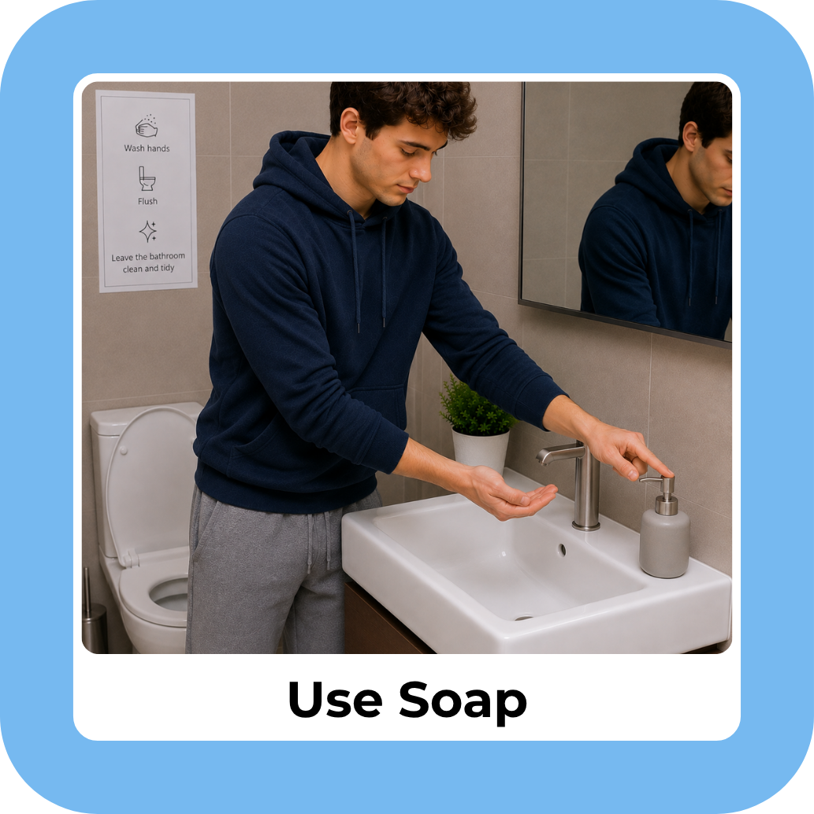
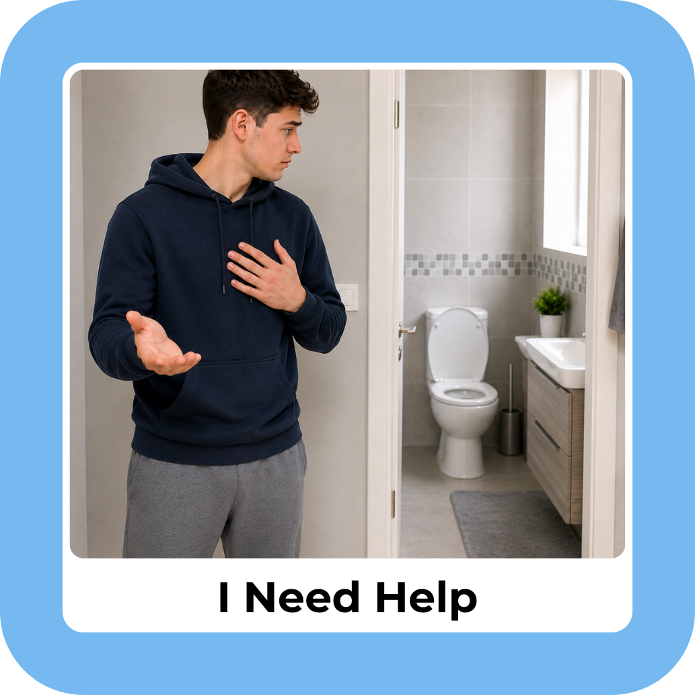

Toilet routines
From recognising the need to go and preparing the bathroom, through using the toilet, wiping, finishing and flushing.
THE SEN & CO TOOLKIT STUDIO



32 visual cards · Teens & adults
Three sample cards from the pack. The download contains all 32.
SELF-CARE & EVERYDAY INDEPENDENCE
32 discreet visual supports for teens & adults
US$7.99 Digital download
Break bathroom routines into clear, manageable steps. Mature, realistic imagery supports everyday routines and communicating when something is needed.
Ready to download
Buy now — US$7.99Continue to our Payhip checkout. After purchase, download your files straight away and receive a download link by email.
A printable digital pack. No physical cards are posted.
INSIDE YOUR PACK
Choose the cards that fit the person and the setting. You do not need to use every card.
From recognising the need to go and preparing the bathroom, through using the toilet, wiping, finishing and flushing.
Visual prompts for handwashing, soap, rinsing, drying and leaving the bathroom.
Cards for asking for help or toilet paper, needing clean clothes, communicating discomfort and unexpected bathroom situations.
PNG images are 1033 × 1033 pixels. They are supplied as finished images, not editable Canva templates.
For cards already arranged on sheets, use the A4 PDF and select Actual Size / 100%. For individual PNGs, set each image to 5 × 5 cm in your print layout. Print, cut and optionally laminate, leaving a sealed edge around each card.
Teens and adults who benefit from visual prompts for bathroom routines and communicating needs. The imagery depicts a young man in a bathroom, with discreet framing. Review the samples to decide whether the style suits the intended user.
For the purchaser’s personal use and direct support use. Digital files and artwork must not be resold, shared, redistributed, uploaded elsewhere or claimed as your own.
NEED SOMETHING DIFFERENT?
Talk to the studio about a custom visual resource.